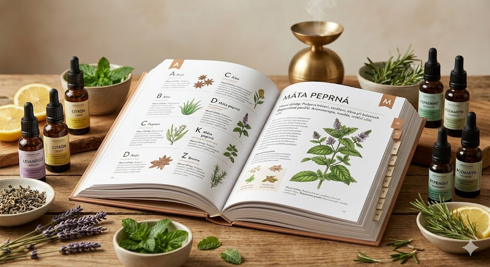

355 olejů a směsí BEWIT
Přehled všech jednodruhových olejů a směsí. Vyhledejte podle názvu nebo účinku.

Zobrazeno 355 z 355
🌿 Všechny esence, které na tomto webu doporučuji, jsou od BEWIT. Jako registrovaný zákazník můžete nakupovat se slevou až 50 % na vybrané produkty.
Registrace u BEWIT zdarma →